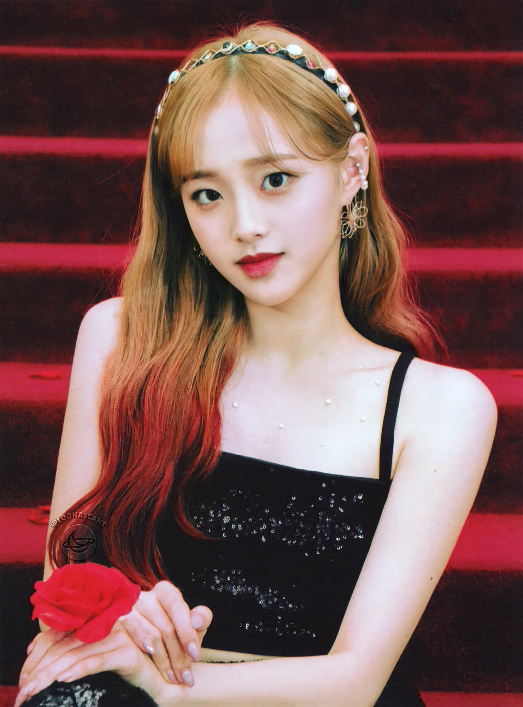

Chuu is the tenth member of Loona. She debuted on December 14, 2017 as a member, and released her solo single album "Chuu" on December 28, 2017.
Chuu later debuted as a member of yyxy with members Yves, Go Won and Olivia Hye on May 30, 2018 with the mini-album beauty&thebeat. Chuu starred in the web drama Dating Class along with Gyuri of fromis_9 and Seoham from KNK. The airing started on May 10, 2019.
| Chuu | |
|---|---|
|  | |
| Full Name | Kim Ji-Woo (김지우) |
| Birthday | October 20, 1999 (21) |
| Month | December |
| Color | Peach |
| Animal | Penguin |
| Sub-Unit | yyxy |
| Shape | Triangle |
| Zodiac Sign | Scorpio |
| Blood Type | A |
Growing up, Chuu had always wanted to be a singer. However, she was not given support from her mother due to her familiarity with the difficulties of becoming a singer. Despite that, Chuu continued to pursue her dream with the approval of her father. In order to become a singer, Chuu applied and was accepted as a singer major at Hanlim Multi Arts High School in Seoul in 2015. Later, she became a trainee at FNC Academy in 2016. Sometime after, she left FNC Academy and joined Music Works. It was also around this time that Chuu started her popular Instagram account. Wanting to further challenge herself, Chuu departed from Music Works to seek for a new agency. Although she auditioned for JYP Entertainment and YG Entertainment's "The Black Label", she was not accepted into either one of them.
On November 11, 2017, Chuu made her final post on Instagram before disappearing. Seemingly unrelated, a member of LOONA, named Yves, appeared in episode 230 of LOONA TV on December 6. A day later, the teaser for LOONA's 10th member was released. Not until days after the episode of LOONA TV, a fan of Chuu's noticed that Yves' phone had a sticker given to Chuu on her birthday two months before. As a result, many fans had predicted that the new member would be the well known 'Instagrammer' "Kim Ji Woo". These were later confirmed on December 13 when it was announced the new member was Chuu.
Her appearance in Heart Attack showed her undying love for Yves where she wanted to blend in so bad with her. Chuu has an undying love for Yves, she admires her, however she cannot get Yves's attention. Chuu's admiration towards Yves leads into copying her, by trying to learn Yves's dance and wearing the same clothes as her. However, in Chuu's dream (in Heart Attack), that represents what her heart truly wants, she's just with Yves, meaning that she's able to find a sense of her own identity, realizing that what she feels for her is love, rather than envy or a desire to be Yves.
Yves only starts paying any attention to her only after Chuu commits to sin like Yves wanted her to so they could leave Eden together.